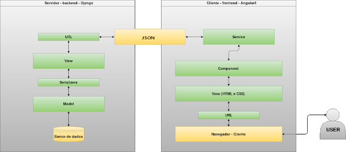
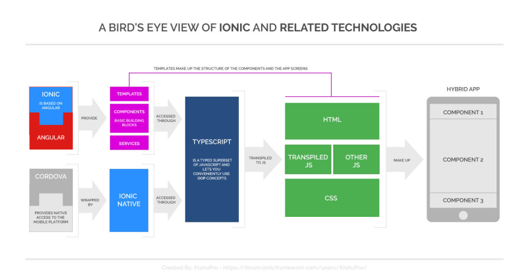
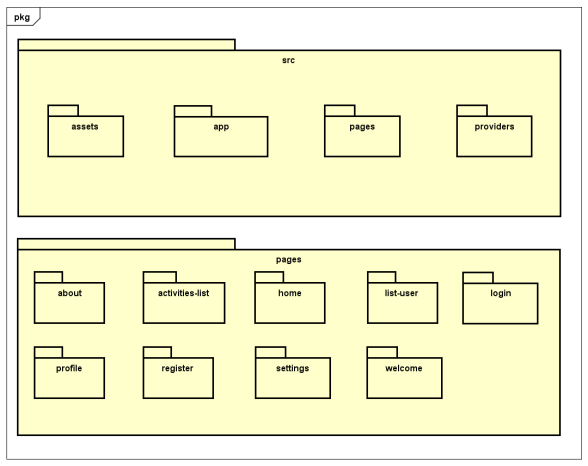

Histórico de Versões
| Data | Versão | Descrição | Autor |
|---|---|---|---|
| 19/03/2018 | 0.1 | Adição tópicos 1 e 2 | João Vítor, Luciano, Rômulo e Sara |
| 20/03/2018 | 0.2 | Adição tópicos 3 e 4 | João Vítor, Luciano, Rômulo e Sara |
| 21/03/2018 | 1.0 | Adição tópicos 5 e 6 | João Vítor, Luciano, Rômulo e Sara |
| 18/04/2018 | 1.1 | Adição de novas imagens, refatoração dos tópicos 2, 4 e 5 | Rômulo, Renan Schadt, Rafael Makaha |
Sumário
2. Representação da Arquitetura
3. Metas e Restrições de Arquitetura
Documento de Arquitetura
1. Introdução
1.1. Finalidade
A criação de um software está ligada à definição da sua arquitetura. Este documento tem como objetivo esclarecer essa relação, contextualizada no projeto Laços da Alegria. Para isso, será detalhado como serão trabalhadas as linguagens Python, através do Django Rest Framework e HTML, CSS, JavaScript, através do Ionic Framework.
1.2. Escopo
Este documento descreve toda a arquitetura utilizada para a implementação do projeto Laços da Alegria, explica as tecnologias django REST e Ionic que serão utilizadas e possibilita uma visão ampla do projeto, assim, facilitando sua compreensão e entendimento.
1.3. Referências
PADRÕES ARQUITETURAIS MVC X ARQUITETURA DO DJANGO. Disponível em:
DOCUMENTO DE ARQUITETURA DE SOFTWARE (DAS). Disponível em:
1.4. Visão Geral
O documento detalha a arquitetura utilizada no projeto, justificando escolhas de padrões arquiteturais, linguagens, frameworks e ainda a representa o modelo de arquitetura utilizado e sua aplicação nas duas tecnologias escolhidas, Ionic Framework e Django Rest Framework além de suas metas e restrições, visão lógica, visão de implementação e, por fim, a qualidade.
2. Representação da Arquitetura
2.1. Arquitetura Django REST
O Django REST Framework (DRF) é um extensão do Django Framework e é utilizado para a construção de APIs em plataforma Web, com este é possível criar um back-end independente, através de micro serviços, podendo se comunicar com um front-end de uma aplicação mobile ou web através de arquivos JSON. Uma arquitetura REST opera através de métodos de protocolo HTTP; como GET, POST, PUT, DELETE, entre outros.
A arquitetura do Django REST Framework é baseada na arquitetura MVC, que é oriunda do Django Framework e busca modularizar a interação com diferentes funcionalidades da API. Cada funcionalidade, deve ter uma estrutura que também é herdada da estrutura do Django, contendo uma ‘model’ e uma ‘view’ em cada funcionalidade, em diferentes endpoints, gerando módulos que podem ser retirados e adicionados sem uma alteração na estrutura do projeto.
A model define a estrutura de dados que estará presente no banco de dados. É, também, responsável por armazenar os métodos das classes criadas para a implementação da aplicação que serão chamadas - na arquitetura REST -, pelas views.
As views, através de requisições HTTP, realizam os métodos solicitados e enviam uma resposta. Essas requisições são feitas através de endpoints, que são definidos como URLs.
Na camada de bancos de dados, o PostgreSQL é o sistema de gerenciamento de bancos de dados (SGDB) responsável pela persistência dos dados na aplicação. Assim, sua principal funcionalidade é de armazenar dados de maneira segura e de retorná-los quando forem requisitados.
A informação de entrada e de saída da arquitetura REST é gerenciada pelo Serializer. Este é responsável, na saída de dados, pela conversão de estruturas complexas de dados em JSON - estrutura simplificada de pacote de informação -; e, na entrada de dados na API, é responsável por fazer o oposto, ou seja, receber um JSON e transformá-lo em uma estrutura complexa de dados compatível com as presentes na API.
As migrations são utilizadas para escrever no banco de dados tudo o que foi descrito nas models, automaticamente, de uma forma que possa ser compreendido por este. Sempre que houver alterações na model, devem ser criadas novas migrations, através do comando makemigrations, e executadas, através do comando migrate.

Figura 1 - Arquitetura do Projeto
2.2. Arquitetura Ionic Framework
O Ionic é um framework open-source em JavaScript para desenvolvimento de aplicativos móveis híbridos usando HTML, CSS e JavaScript. Com ele é possível escrever o código da aplicação apenas uma vez para rodar no IOS, Android e Windows Phone.
O Ionic, através do Apache Cordova, ajuda na comunicação com as APIs (Application Program Interface) de cada Sistema Operacional Móvel que, por sua vez, comunicam-se com um componente chamado Web View, usado por aplicativos nativos para visualização de páginas web dentro do contexto dos aplicativos móveis). O aplicativo Ionic funciona de forma embarcada dentro dessa Web View, que interpreta e renderiza o código.

Figura 2 - Arquitetura Ionic
O framework é baseado no Angular e utiliza sua infraestrutura e seus módulos, como services, controllers, routes, etc.
O Ionic estiliza os componentes HTML para se parecer com os componentes nativos de cada plataforma móvel, simulando a experiência nativa do usuário final e usa esse ‘navegador’ para rodar os aplicativos e disponibiliza bibliotecas JavaScript para acesso do hardware e tecnologias nativas como câmera, GPS, Bluetooth, entre outros; além de que também é possível rodar essas aplicação em um navegador web.
A aplicação é empacotada em arquivos instaláveis para cada plataforma móvel que então passa a ficar disponível nas principais lojas de aplicativos móveis e ser distribuída para o público-alvo.
3. Metas e Restrições de Arquitetura
O desenvolvimento do projeto será com o Ionic Framework 3.x.x junto com o Django Rest 3.7.7 e para utilização das ferramentas são necessários alguns requerimentos como Python 3.6.4, Django 2.0.3 e Nodejs 6.9.4.
O desenvolvimento deverá estar de acordo as boas práticas de programação e requisitos não funcionais para que facilite a manutenção por outras equipes.
Laços da Alegria será um aplicativo nativo que deverá rodar apenas em versões superiores a 4.1 do Android e 7.0 do IOS, essa restrição é baseada nos requerimentos das tecnologias usadas para o desenvolvimento do projeto. Além disso, para que o aplicativo funcione será necessário conexão com a internet.
4. Visão Lógica
4.1. Diagrama de Classes
A lógica do projeto será baseado no diagrama de classes abaixo, que está sujeito a alterações ao longo do desenvolvimento.

Figura 3 - Diagrama de Classes
4.2. Diagrama de Pacotes

Figura 4 - Diagrama de Pacotes
5. Visão de Implementação
A proposta da arquitetura MVC( Model, View, Controller) é fazer uma divisão em 3 camadas sobrepostas, de uma forma que o usuário só irá interagir com uma delas, no caso a View. Cada parte tem um valor diferente:
- Modelos (models) - Armazenamento de dados, definição dos estados das camadas e interpretação de requisições, que será controlada pelo Django Rest.
- Visão (views) - Controle de layout e definição de design, que será controlada pelo Ionic.
- Controles (controllers) - Tráfego de informações entre todas as camadas, entre o Django Rest e o Ionic Framework.
6. Qualidade
O aplicativo seguirá o padrão de desenvolvimento definido nos frameworks utilizados que irá organizar as diversas camadas da aplicação sendo que cada camada tem sua função específica dentro do software. Onde será mantida uma boa organização do código facilitando a visualização, entendimento e implementação do código.